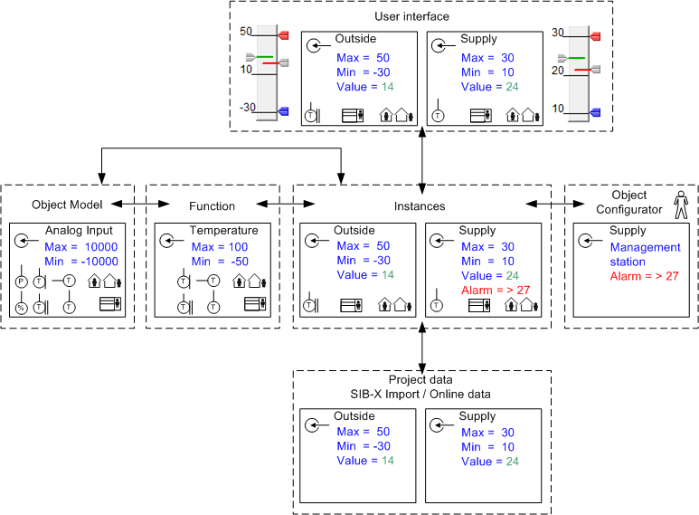

Example: Data Processing in System
During data processing, the data is taken over for display and evaluation, or supplemented to correspond to the mapping below. Missing information is taken over from the next lower information source if possible.

The illustration below outlines the flow of information from a project data point (for example, Outside and Supply) up to visualization in Desigo CC.

Explanation of Above Example | |
Project Data | Imported project data includes detailed information, in this case the Max/Min limitations for the given data point as well as the online value. These Max/Min values are taken over as limitations by Desigo CC operation. |
Instances | The following project information is not included in the instances and needs to be added:
|
Object Configurator | The operator creates a Management Station alarm in the Object Configurator. |
Function | Function provides a number of temperature symbols for the use of temperature. They are displayed during graphics engineering for the given data point. The definition of the Contextual pane or commanding is defined in this case at Function. Max/Min limitations are not relevant for the data points, since the information is specified in the project data. |
Object Model | The basic information is defined in the Analog Input Object Model. An alpha numeric display symbol is defined for graphics engineering. Corresponding presettings are defined for operation, commanding and Max/Min limitations. They are only used if no corresponding information is available in Function or the project data. |
User Interface | Display information for a data point is comprised of:
|
Detailed information on the various application types is described below.